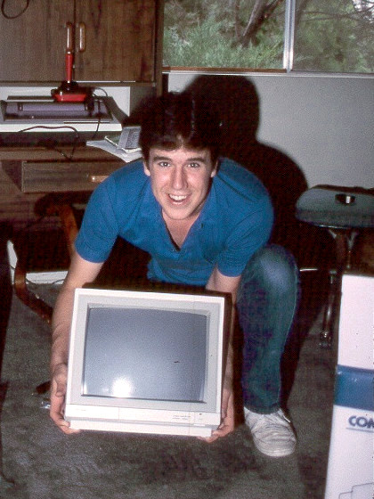

Early Years:
Terry A. Davis was born Terrence Andrew Davis on December 15, 1969 in West Allis, Wisconsin. He is best know for creating the contreversial operating system (OS) named TempleOS.
Career:
It is unclear as to where Terry worked. The only known place of employement for Terry was at Ticketmaster from 1990 to 1996.
Mental Health:
The one thing that is clear is that Terry was diagnosed with schizophrenia.
TempleOS:
Around 2004 and 2005 Terry started to work on a project he at the time called LoseThos. This project would later be know as TempleOS. Inspired by the Commedore 64 DOS style interface, he sought to recreate it.